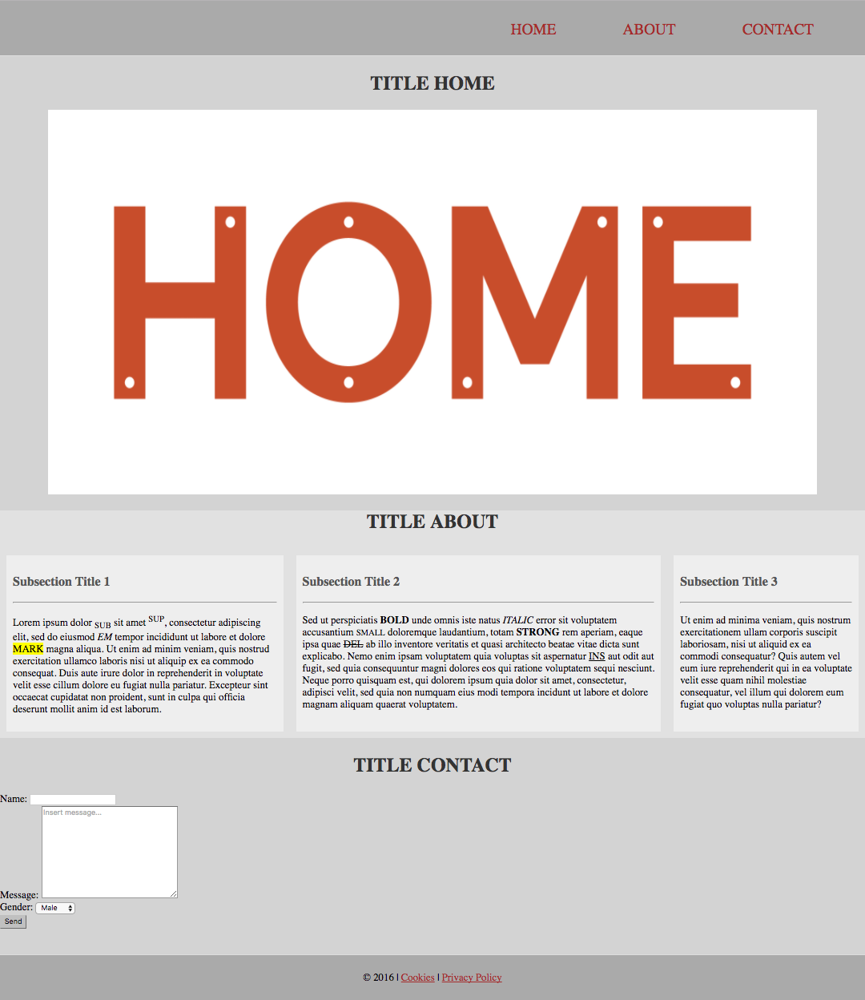
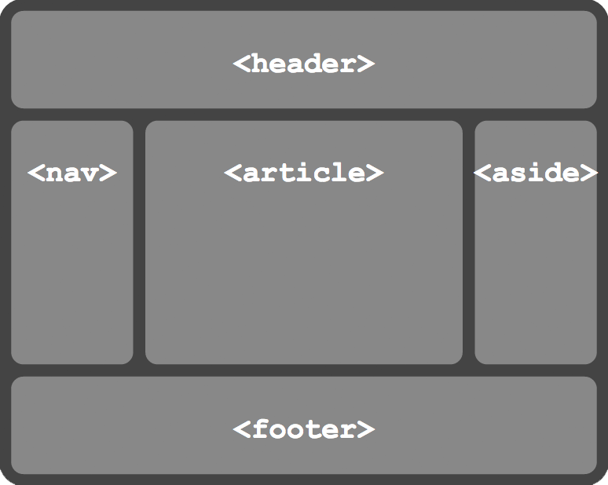
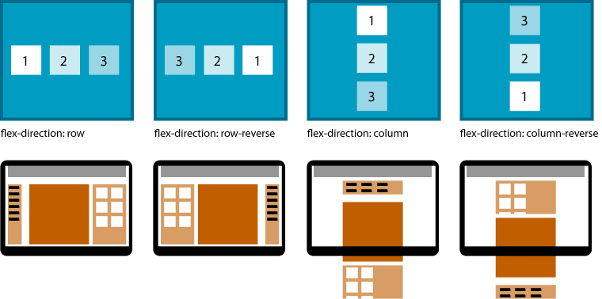
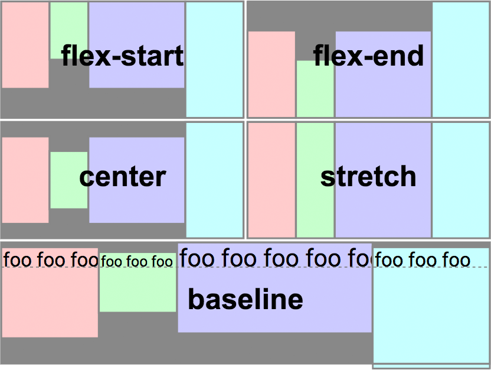

Web 02
HTML & CSS
Web 02
ÚLOHA 0
Príprava základnej štruktúry súborov
A: Vytvorte nasledovnú štruktúru súborov:
css/style.css image/… view/moja-podstranka.html index.html
B: V súbore
index.html si vytvorte základnú štruktúru pomocou tagov
<head> a
<body>. V hlavičke html súboru uveďte názov vašej stránky a pomocou tagu
<link> nastavte ikonu stránky, ktorá sa zobrazí v prehliadači. Obrázok ikony vložte do adresára
image.
http://www.iana.org/assignments/media-types/media-types.xhtml
<title>Moja stranka</title>
<link rel="icon" href="image/moja-ikona.png" type="png">
C: Zahrňte css súbor
style.css v hlavičke html súboru
index.html pomocou tagu
<link>.
<link rel="stylesheet" href="css/style.css" type="text/css">
ÚLOHA 1
- Práca so súbormi
index.htmlamoja-podstranka.html. - Vytvorenie základnej štruktúry obsahu stránky a prepojenie s inými podstránkami.
ÚLOHA 1

A: Pomocou tagu
<footer> vytvorte zápätie vašej stránky. V ňom využite HTML kód pre zobrazenie
© a prostredníctvom tagu
<a> vytvorte minimálne jedno prepojenie na externú web-stránku a jedno prepojenie na váš súbor
moja-podstranka.html, do ktorého môžete umiestniť blok textu.
http://www.ascii.cl/htmlcodes.htm
<footer>
<p><a href="…" target="…"></a> … </p>
</footer>
B: Podobným spôsobom implementujte hlavičku vašej stránky - tag
<header>. V nej vytvorte navigáciu
<nav>, ktorá bude obsahovať zoznam
<ul> s minimálne troma položkami
<li>. To bude prestavovať menu stránky, kde jednotlivé položky budú slúžiť ako odkazy na jednotlivé sekcie stránky.
<header>
<nav>
<ul>
<li><a href="#…">…</a></li>
…
</ul>
</nav>
</header>
C: Pomocou tagu
<section> vytvorte sekciu pre každú položku vášho menu s unikátnym atribútom
id.
Id sekcie musí korešpondovať s odkazom v menu. Pridajte nadpis do každej sekcie.
<section id="…">
…
</section>
D: Pridajte komentáre do vášho zdrojového kódu.
<!--komentar-->
ÚLOHA 2
Práca so súborom index.html - viac html tagov.
A: Do sekcie 1 vložte obrázok. Nastavte mu šírku a výšku pomocou HTML atribútov. Obrázok uložte do adresára
image.
<img src="…" alt="…" width="…" height="…">
B: V druhej sekcii si vyskúšajte prácu s textom. Vytvorte viacero podnadpisov
<h1> -
<h6> a blokov textu
<p>, jednotlivé súčasti zabaľte do
<div>. V texte využite nasledujúce html tagy -
<hr>,
<sub>,
<sup>,
<b>,
<i>,
<small>,
<strong>,
<em>,
<mark>,
<del>,
<ins> a
<span>.
C: Do sekcie 3 vložte formulár, použite základné formulárové elementy ako
<input>,
<textarea> a
<select>. Pre každý element definujte
<label>. Na konci pridajte odosielací
<button>.
<form>
<div>
<label for="…">…</label>
<input id="…" name="…" type="text">
</div>
…
</form>
ÚLOHA 3
- Štýlovanie web-stránky.
- Práca so súbormi
index.htmlastyle.css.
A: Do súboru
style.css pridajte štýly pre nasledujúce html elementy:
<body>,
<p>,
<h1>-
<h6>. Využite vlastnosti ako:
background-color,
font-size,
color,
text-align,
text-transform, …
body {
background-color: beige;
…
}
B: Pridajte ďalšie štýly pre
<footer>. Využite vlastnosti z bodu A +
margin,
padding,
border, …
C: Vycentrujte pozíciu obrázka v sekcii 1 prostredníctvom atribútu
class. Zmeňte farbu pozadia pre niektorú zo sekcií prostredníctvom jej
id.
.moja-trieda {
display: block;
margin-left: auto;
margin-right: auto;
}
#mojeId {
background-color: black;
}
D: Pridajte ďalšie štýly pre
<header>. Využite vlastnosti z predchádzajúcich bodov. Navyše, pridajte štýly pre menu stránky - zobrazenie položiek zoznamu
inline.
.moje-ul {
list-style: none;
}
.moje-ul li {
display: inline;
}
.moje-ul li a {
…
}
E: Vyskúšajte si základné použitie flex-boxu. Jednotlivým
<div> elementom pre bloky textu s podnadpismi v sekcii 2 definujte atribút
class="flex-item". Následne zabaľte všetky tieto bloky do ďalšieho
<div>, ktorému tiež pridajte atribút
class - bude reprezentovať kontajner. Definujte štýly pre tieto triedy.
.flex-container {
display: -webkit-flex;
display: flex;
}
.flex-item {
background-color: …;
margin: …;
padding: …;
}
E: Flex-box: flex-direction

E: Flex-box: align-items

F: Doštýlujte zvyšné časti stránky.
BONUS
Ukazka css a html mobilu http://codepen.io/anon/pen/wgKRJxBONUS 1
- Zmeňte font písma na vašej web-stránke.
BONUS 2
- Pridajte do formulára ďalšie form elementy
- (radio, checkbox, …)